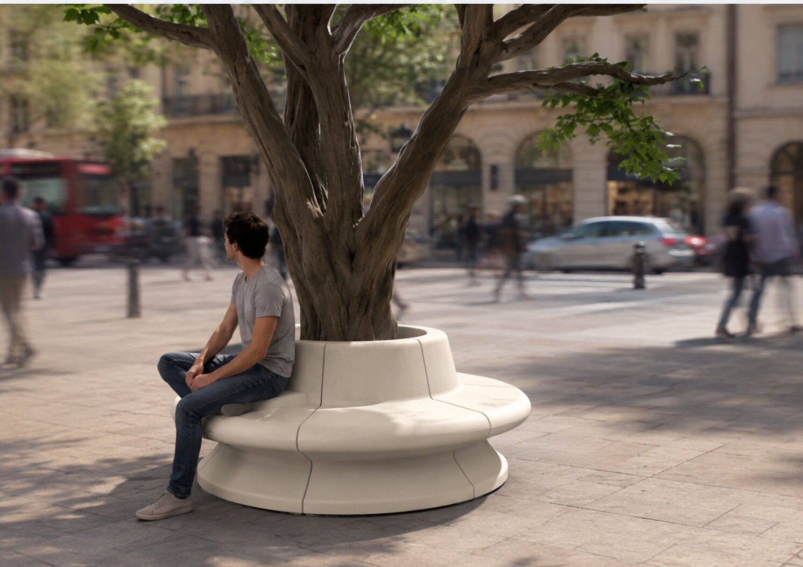

Sistema modular de asientos configurables para espacios públicos

Diseñar un mobiliario urbano fabricable mediante inyección plástica a partir de una consigna abierta.
Personas que utilizan espacios públicos para descansar, reunirse o permanecer temporalmente.
Roulette-Chair propone una nueva forma de ocupar el espacio público mediante módulos configurables que permiten crear distintas disposiciones alrededor de un árbol.
El proyecto transforma un banco convencional en un sistema adaptable capaz de responder a distintas configuraciones y necesidades de uso dentro del espacio público.
Aprendí a desarrollar una propuesta desde una hoja en blanco, transformando una idea abierta en un sistema funcional, fabricable y adaptable al usuario.